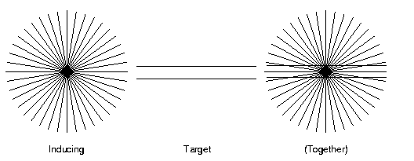

To find a particular topic, scan the list below, and also search this document for specific keywords that interest you by using the FIND button on your web browser. (The FIND function is also located under the Edit menu.)
Ask new questions on the discussion web page.
From previous classes, but still very relevant...
Questions regarding:
Maze learning (Q2).
Mental rotation.
Alignment and rotation heuristics.
Illusions and imagery.
Concept learning strategies.
Interference in imagery.
Schemas and memory.
Too much! How can I learn it all?
Maze learning.
Imagery and athletic performance.
Concept learning strategies.
Concept learning and scientific method.
Feature overlap in levels of categories.
Rosch's picture identification experiment.
Path priming and semantic associate priming.
Integration in ACT model.
> I do not understand what exactly we need to know for the essay > question on the maze. I was in class that day but I do not have > anything about a result in my notes (?)
The result is simply that the second run avoids the false paths of the first run. (There was no I.V. or D.V. explicitly mentioned in lecture, and stating the I.V. and D.V. will not be required on the exam, but you can think of the I.V. as the run number [first run, second run] and the D.V. as the number of moves until the goal is found.)
The theories need to explain this difference in behavior. See below, and also the web
notes on this topic.
> The essay question on imagery...are you looking for a simple answer > there? Like, Imagery aids in the rotation of the object. The more > degrees the object was moved, means that it will take longer to > determine whether the objects are the same b'c imagery moves slowly.
What exactly is the result that needs to be explained? What exactly is the form of the curve that relates response time to degree of rotation? What is it about this result that makes "mental rotation" the natural explanation? Can you answer this question before reading on?
Answer: Response time is a linear function of angle of rotation.
Now, how does the theory of "mental rotation" explain that result? What is the critical constraint on mental rotation, posited by the theory?
Answer: Mental rotation occurs at a fixed speed, for a given type
of figure being rotated. Were it not for this fixed-speed constraint,
there would not necessarily be a linear increase in RT's. (Or course,
other theories might also be able to fit the linear increase, but
what's critical in this theory is the fixed speed of rotation.)
> Professor Kruschke-- My notes about alignment and rotation > heuristics in cognitive maps are inadequate. Would you please briefly > outline these ideas? Thanks so much!
When doing mental geography, people make systematic mistakes. For example, when asked what's farther west, Reno or Los Angeles, people will tend to say L.A., even though Reno is actually farther west.
These kinds of mistakes seem to be caused by systematic distortions in people's mental maps, or in the way people use their mental maps. There are two kinds of distortions we discussed, namely, the rotation heuristic and the alignment heuristic.
The rotation heuristic applies to single objects, such as a single state, or single nation, or single island, etc. People tend to rotate the object so it is better aligned with vertical or horizontal. For example, people's mental map of California is more aligned with vertical (north-south) than is really should be, because in reality, California is quite "tilted" geographically.
The alignment heuristic applies to two or more objects, such as two
or more continents. People tend to align these objects on a common
vertical or horizontal axis more than they should be. So, for
example, when comparing the USA and Europe, people tend to mentally
align the contintents to about the same latitude, but in reality
Europe is much farther north than the USA.
> Professor Kruschke-- I don't have adequate info in my notes about > geometric illusions and imagery, and how imagery can distort > perception. A quick explanation would be very appreciated. > Thanks so much

The experiment by Wallace demonstrated that when people of high imagery ability imagined the inducing lines (at left in the figure above) while actually looking at the target lines (middle above), they suffered a visual illusion wherein the target lines looked bowed apart, despite really being parallel. (The figure above doens't give the best effect because of limited resolution.)
The point is that this is another piece of evidence that imagery
and perception use some of the same mental machinery, and can
interfere/interact with each other when done at the same time.
> Just a few questions about the test. do you want us to know all the > startegies for attributes like conservative focussing, focus > gambling and global focusing? If so can you explain to me again what > exactly is focus gambling?
Yes, you should know about these strategies. All these strategies apply to learning about a conjunctive rule. That is, they are strategies for identifying relevant attributes for a rule known in advance to be conjunctive.
Conservative focussing is just probing 'til a positive instance is found, then changing one attribute at a time, to test for single-attribute relevance.
Focus gambling also starts with finding a positive instance, but then changing more than one attribute at a time. This is a gamble because your next case might still be in the concept, and therefore you know that all the changed attributes are irrelevant (big payoff for small investment), but your next case might be outside the concept, and then you don't know which of the changed attributes is relevant (little payoff).
Global focusing is a strategy whereby more than one hypothesis is
tested at a time. We didn't talk about it much in lecture, and you
need not worry over it for the exam.
> Also what is it about interference that we should focus on? The > information about verbal and visual material or more? I also have > very little in my notes about geomtric illusions, should i just > focus on the experment you talked about in class? Thanks
> My second question deals with interference and perception. Is what > you are looking for that they are closely related and visual > responses wiht visual question and auditory responses with auditory > questions cause interference but visual combined with auditory do > not cause interfernce? Thank you very much for helping me out.
Yes, you should know about the Brooks experiment, in both its visual and verbal (auditory) forms.
The visual illusion experiment is summarized above.
> The first one deals with Barlett's schema and schematization of > memory. I am not really sure whayt schematization of memory is and in > regards to Barlett's schema is what you are looking for is that all > new information interacts with old information and it is this > interaction that causes errors?
A schema is just a framework for organizing information in
memory (see more details in the textbook). The theory says that we use
schemas when encoding and retrieving information from memory. The
theory can explain phenomena such as the difficulty of encoding
information when we don't have a schema for it (e.g., the description
of the urban serenade; or, trying to learn cognitive psychology for
the first time). The theory can also explain phenomena such as false
recall of details that are consistent with the schema, but didn't
actually occur (after all, memory is reconstructive [an old theme!]).
>
> I'm a student in your P335 class and I'm beginning to > study for the upcoming exam. The thing is I'm having great > difficulty trying to piece together information to fully > answer your example topics. I don't really know how to > tackle them. When I look at the readings my mind goes > bonkers because I feel that the readings are fairly difficult > to understand and very technical. Should I be focusing on > the notes more than the book or both. I need help!!!! > Thanks. > Sincerely, Confused
Keeping your knowledge organized is crucial for understanding and for remembering. The time you spend figuring out how it all fits together will pay off in terms of performance on exams and in terms of your enjoyment of the class!
To help digest the readings, it's crucial always to keep in mind the "big picture" --- why is the author discussing this particular thing in this particular place? What point is it supposed to be illustrating or demonstrating? Be sure you can answer this question; if you can't, then you don't really understand!
The knowledge organization diagram from the syllabus is
intended to help you keep the big picture. Whenever you read
about an experiment in the book, or hear about one in lecture,
you should be able to fill in all the leaves of the knowledge
organization tree. Sometimes an experment is discussed in
terms of its results only, without a theory thoroughly
described. In these cases, you should at least be aware that
if a theory were proposed, it would have to specify
representation and process.
> Professor Kruschke- > I have a few questions reguarding some of the material that will be > on the exam. > > 1. Is there anything more to the anologue representation of maze > learning other than building a cognitive map? My notes seem incomplete. > > Thank you. > My second question is about the maze running demonstration. Is > there really any thing else to the task except that in the first > run, false paths are usually taken and in the second run, a more > direct route is taken?
The experimental fact to be explained is that people (and rats) take a more direct route on the second run than the first. This is all that is being emphasized in this particular demo. See also related question above.
Then comes the issue of how to explain this result. What is going
on in people's minds that underlies this learning? In the explanation
that posits analogue representation, the first run builds up a
cognitive map (this is a process of learning), and the second
run scans the map (again a process) before actually moving.
The representations and processes are listed in a web-linked table.
> I couldn't find anything in my notes or the book about how imagery > can be used to improve athletic performance. Could you please > explain? Thanks!
Check out Box 7.1 (pp.202-203) of the textbook, entitled "Mental images help athletes train their bodies". You should read about what sorts of mental imagery are beneficial, and what sorts are detrimental.
There is also a sample applications
paper on this topic.
> Professor Kruschke- > I have a few questions reguarding some of the material that will be > on the exam. > > 2. What exactly do you mean by "rule learning strategies in concept > learning"? Are you referring to the material in the text book or > was it covered in class? I am unclear on what to study. > > Thank you.
I am referring to strategies such as "conservative focussing",
discussed in class. This particular stategy is effective when you
know that the rule is a conjunctive rule, and all you have to do is
discover the relevant attributes (referred to as "attribute learning"
on p.224 of the textbook).
> How exactly is conservatice focussing NOT like a science. > My notes weren't really clear on this topic.
In scientific method, the goal is to discover what factors are causally related to an outcome (and in what manner they are related to an outcome). We don't know in advance what factors will have an effect, and we don't know in advance how the factors combine to produce the effect. We don't know in advance what kind of "rule" produces the outcome, and in particular, we don't know that a conjunctive rule will work; the factors might instead interact in complex ways. Therefore conservative focussing will not suffice as a strategy to figure out which factors are relevant to an effect. Instead, we must exhaustively explore various combinations of levels of factors, to map out any possible complex interactions.
See also the web notes on this topic.
> Hi I have a couple of questions. > What do you mean by the extent of feature overlap in superordinate, > basic and subordinate categories? > ... > Thanks
This is really just another perspective on the feature-listing
experiment of Rosch. The idea is that members of a super-ordinate
category (e.g. chair, table, sofa as members of furniture) have
relatively few overlapping features, but members of a basic level
category (e.g., desk chair, dining room chair, living room chair as
members of chair) have relatively numerous overlapping features.
Members of subordinate categories also have many overlapping features.
> does rosch's shape identification expt refer to the expt about > furniture in the book? thanks. > Hi I have a couple of questions. > ... > What is the shape identification experiment? > Thanks
Either one will do for the exam. The point I wish to emphasize with these experiments is evidence for a basic level in categorization.
Thus, for the category-verification experiment (see a picture and verify that it is an instance of furniture, or of a chair, or of a living-room chair), RT's were fastest at the basic level.
For the outline-identification experiment (see an outline and try
to say what it is a picture of), identification of average shapes was
better for the basic level than the super-ordinate: The average chair
(basic level) is identifiable as a chair; the average piece of
furniture (super-ordinate level) is not identifiable as furniture.
> Professor Kruschke- > > I am having trouble understanding the differnece between path priming and > semantic-associate priming. Can you please help? > > Thank you so much for clearing up these concepts > Could you also go over the difference between path priming and > semantic-associate priming? It's a little unclear to me. Thanks > again!
Semantic associate priming is described on p.272. This involves "lexical verification" (as opposed to sentence verification). Each trial has two successive words (or non-words), and verifying the second can be facilitated if it is meaningfully related to the first.
Path priming is described on p.266: "Collins and Quillian proposed that the degree of facilitation should depend on whether one follows the same path in the network to answer the two questions." In verifying two successive sentences, the second verification should be facilitated if it uses some of the same path as the first verification.
Aside from the difference between tasks (sentence verification
vs. lexical verification), there are differences in the types of links
assumed by the models. The hierarchical model only assumes "is-a"
links and "property" links. The spreading activation models assumes
various types of weighted connections between any related concepts
(such as bread and butter).
> Professor Kruschke- > > I am also having trouble understanding how the ACT model deals with the > effects of integration of sentences. I think this is explained by the > subnode model, but I'm not exactly sure how. > > Thank you so much for clearing up these concepts
I think the key summary sentence is on p.278, 4th paragraph: "The revision [in ACT] is simply that activation can stop at a subnode rather than spread to the integrated facts linked to that subnode." So factual inferences can be fast in ACT because responses can be generated as soon as subnodes are activated, rather than waiting for activation to spread to all the constituent facts.
>